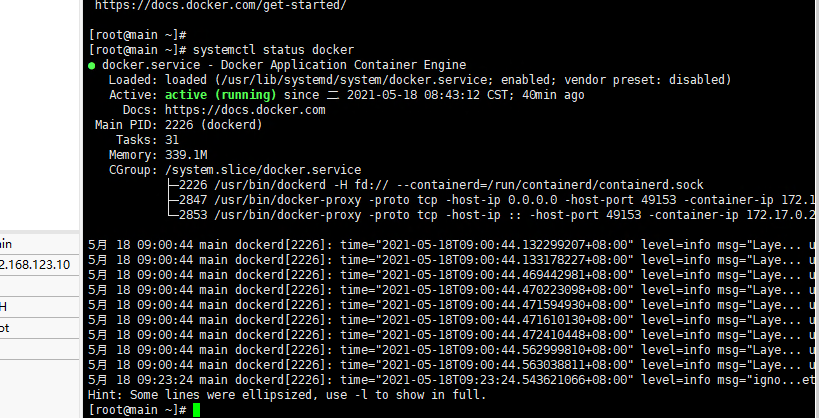
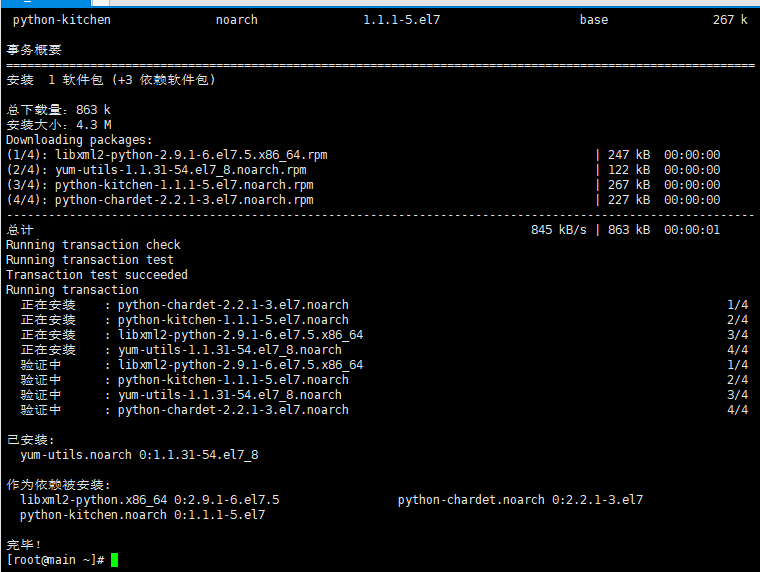
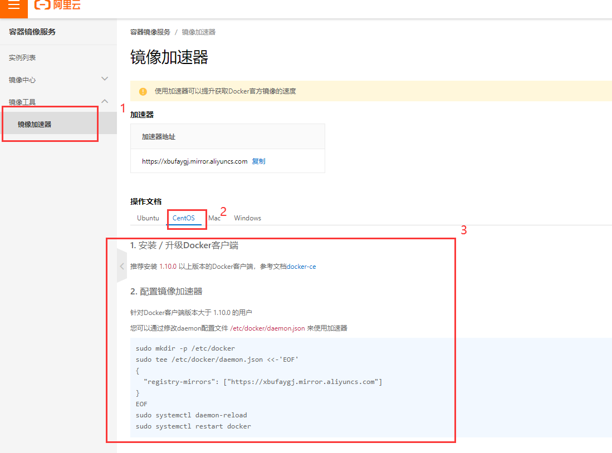
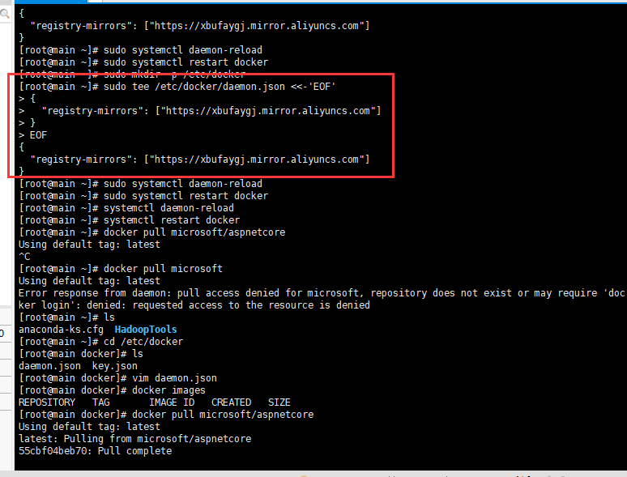
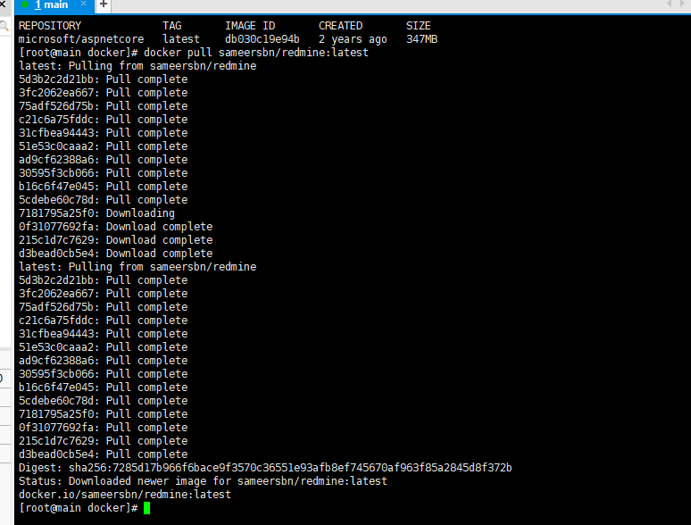
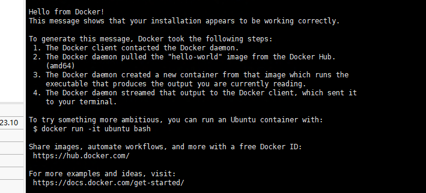

Docker
前言
本教程是基于CentOS7上安装和使用docker。本次使用的是在Windows自带的hyper-V中安装CentOS7并创建的虚拟机。
安装CentOs创建虚拟机教程可查看上一篇：Hadoop的集群搭建windows基于Hyper-V虚拟机超详细教程（一主二从）
前提条件：
1 | 目前，CentOS 仅发行版本中的内核支持 Docker。 |
1.1查看CentOS内核
Docker 要求 CentOS 系统的内核版本高于 3.10 ，查看本页面的前提条件来验证你的CentOS 版本是否支持 Docker 。
通过 uname -r 命令查看你当前的内核版本

tips:从 2017 年 3 月开始 docker 在原来的基础上分为两个分支版本: Docker CE 和 Docker EE。
Docker CE 即社区免费版，Docker EE 即企业版，强调安全，但需付费使用。
1.2安装与配置
1.更新 yum 源
输入以下命令回车执行：
1 | yum -y update |
2.安装依赖包
1 | sudo yum install -y yum-utils device-mapper-persistent-data lvm2 |

3.设置阿里云镜像源
- 重建 Yum 缓存。
- 安装 Docker-CE ，请执行一下命令进行安装：
1 | sudo yum install docker-ce |
4.启动 Docker-CE
1 | sudo systemctl enable docker |
5.镜像加速配置
这里使用的是 阿里云提供的镜像加速 ，登录并且设置密码之后在左侧容器镜像服务下的镜像加速，如下图三步，
通过修改daemon配置文件/etc/docker/daemon.json来使用加速器，将步骤三的命令复制到主机命令窗口。


之后重新加载配置，并且重启 Docker 服务
1 | systemctl daemon-reload |
6.测试运行 hello-world
输入命令：
1 | docker run hello-world |

由于本地没有hello-world这个镜像，所以会下载一个hello-world的镜像，并在容器内运行，看到显示Hello from Docker!表示Docker安装启动成功。
7.查看docker状态
1 | systemctl status docker |

如上图显示的绿色字体，active（runing)表示正在运行。